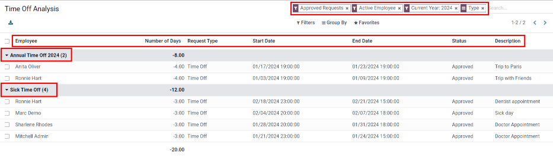

Time Off
Odoos Time Off application is a centralized place, where all time off information is housed. The Time Off app manages everything related to requests, balances, allocations, approvals, and reports.
Users can request time off, managers can approve time off requests, allocate time off to individuals, teams, or the whole company, reports can be run to see how much time off (and what kinds of time off) are being used, accrual plans can be created, and public holidays can be set.
Note
Be advised, only users with specific access rights can see all aspects of the Time Off application.
All users can access the My Time Off and Overview sections of the Time Off application. All other sections require specific access rights.
To better understand how access rights affect the Time Off application, refer to the Create a new employee document, specifically the section about configuring the work information tab.
Configuration
In order to allocate time off to employees, and for employees to request and use their time off, the various time off types must be configured first, then allocated to employees (if allocation is required).
Time off types
To view the currently configured time off types, navigate to . The time off types are presented in a list view. The Time Off application comes with four types of time off pre-configured: Paid Time Off, Sick Time Off, Unpaid, and Compensatory Days. Any of these may be modified to suit the needs of the businesses, or can be used as-is.
Create time off type
To create a new time off type, navigate to . From here, click the Create button to reveal a blank time off type form.
Enter the name for the particular type of time off in the blank line at the top of the form, such as
Sick Time or Vacation. Then, enter the following information on the form:
Time off requests section
Approval: select what specific kind of approval is required for the time off type. The options are:
No Validation: no approvals are required when requesting this type of time off. The time off request is automatically approved when requested.
By Time Off Officer: only the specified Time Off Officer, set on this form in the Responsible Time Off Officer field, is required to approve the time off request. This option is selected by default.
By Employees Approver: only the employees specified approver for time off, which is set on the Work Information tab on the employees form, is required to approve the time off request.
By Employees Approver and Time Off Officer: both the employees specified time off approver and the Time Off Officer are required to approve the time off request.
Responsible Time Off Officer: select the person responsible for approving requests and allocations for this specific type of time off.
Take Time Off in: select the format the time off is requested from the drop-down menu. The options are:
Day: if time off can only be requested in full day increments (8 hours).
Half Day: if time off can only be requested in half day increments (4 hours).
Hours: if the time off can be taken in hourly increments.
Deduct Extra Hours: tick this box if the time off request should factor in any extra time accrued by the employee
Example
For example, if an employee worked two (2) extra hours for the week, and requests five (5) hours of time off, the request would be for three (3) hours, since the two (2) additionally worked hours are used first, and deducted from the request.
Allow To Join Supporting Document: tick this box to allow the employee to attach documents to the time off request. This is useful in situations where documentation is required, such as long-term medical leave.
Kind of Leave: select from the drop-down menu the type of leave this time off type is, either Time Off or Other.
Company: if multiple companies are created in the database, and this time off type only applies to one company, select the company from the drop-down menu. If this field is left blank, the time off type applies to all companies in the database.
Allocation requests section
Requires allocation: if the time off must be allocated to employees, select Yes. If the time off can be requested without time off being previously allocated, select No Limit. If No Limit is selected, the following options do not appear on the form.
Employee Requests: select Extra Days Requests Allowed if the employee is able to request more time off than was allocated.
Example
For example, if ten (10) days are allocated to the employee for this particular type of time off, and this option is enabled, the employee may submit a request for more than ten (10) days.
If employees should not be able to make requests for more time off than what was allocated, select the Not Allowed option.
Approval: select the type of approval(s) required for the allocation of this particular type of time off.
No validation needed indicates that no approvals are required.
Approved by Time Off Officer indicates the Time Off Officer set on this form must approve the allocation.
Set by Time Off Officer indicates that the Time Off Officer set on this form must allocate the time off.
Payroll section
If the time off type should create Work entries in the Payroll application, select the Work Entry Type from the drop-down list.
Timesheets section
Note
The Timesheets section only appears if the user is in developer mode. Refer to the Developer Mode (debug mode) document for details on how to access the developer mode.
When an employee takes time off and is also using timesheets, Odoo creates entries in the timesheet for the time off. This section defines how they are entered.
Project: select the project that the time off type entries appear in.
Task: select the task that appears in the timesheet for this time off type. The options are: Time Off, Meeting, or Training.
Display option section
Color: select a color to be used in the Time Off application dashboard.
Cover Image: select an icon to be used in the Time Off application dashboard.
Note
The only required fields on the time off type form are the name of the Time Off Type, the Approval, the Responsible Time Off Officer, Take Time Off in, Kind of Leave, and the Allocation Requests section.

Accrual plans
Some time off is earned through an accrual plan, meaning that for every specified amount of time an employee works (hour, day, week, etc), they earn or accrue a specified amount of time off.
Example
If an employee accrues a vacation day for every week they work, they would earn 0.2 vacation days for each hour they work. At the end of a forty (40) hour work week, they earn a whole vacation day (8 hours).
Create accrual plan
To create a new accrual plan, navigate to . Then, click the Create button, which reveals a blank accrual plan form.
Enter the accrual plan name in the Name field. If the accrual plan only applies to a specific time off type, select it from the drop-down menu. If this accrual plan is available for all time off types, leave this field blank.
Next, select how the Level Transition occurs, either Immediately or After this accruals period. By default, the first level begins once the time off is approved if the time off is based on an accrual plan. If Immediately is selected, then the next level begins according to the time frame set on the level. If After this accruals period is selected, the next level does not begin until the first level is completed according to the rules set on it.
Rules
Rules must be created in order for the accrual plan to accrue time off.
To create a new rule, click the Add A New Level button right beneath the word Rules,
and a Create Level pop-up form appears.
Fill out the following fields on the form:
Start after (#) (time period) after allocation date: enter the number and value of the time period that must pass before the employee starts to accumulate time off. The first value is numerical; enter a number in the first field.
Then, select the type of time period using the drop-down menu in the second field. The options are: day(s), month(s), or year(s).
Based on worked time: tick this box if the accrual of time off is based on the time the employee has worked. If an employee takes time off that is not considered a worked day, Odoo will not count that day towards their accrual plan.
Rate (#) (time): enter the rate of time off that is accumulated. The first value is numerical; enter a number in the first field. Whole numbers are not necessary, any decimal value may be entered.
Next, in the second field, select the type of time accrued using the drop-down menu. The options are either Days or Hours.
Frequency (X): select how often the employee accrues the time off for this rule using the drop-down menu. The options are Daily, Weekly, Twice a month, Monthly, Twice a year, or Yearly.
Depending on the selection, more fields appear to specify exactly when the accrual renews.
Example
If the employee should accrue one vacation day for every week worked, the Rate is set
to 1, and the Frequency entry is set to Frequency (Weekly) on (Friday). Only the
Frequency and Weekday fields appear.
If the employee should accrue ten (10)vacation days each year, and they receive these days every
year on the first of January, the Rate is set to 10, and the Frequency
entry is set to Frequency (Yearly) on the (1) of (January). The Frequency,
Date, and Month fields appear.
Limit to: enter a maximum amount of days the employee can accrue with this plan.
At the end of the calendar year, unused accruals will be: select from the drop-down menu how unused time off is handled.
The options are either Transferred to the next year, which rolls over unused time to the next calendar year, or Lost, which means any unused time off is gone.
When the form is filled out, click Save & Close to save the form and close the pop-up, or Save & New to save the form and create a new rule. Add as many levels as desired.

Public holidays
Most countries have public or national holidays, and some companies may have specific days they are closed and/or give extra days as holidays.
It is important to configure these days in Odoo, so employees are aware of the days they have off, and do not request time off on days that are already set as a public holiday (non-working days).
Create public holiday
To create a public holiday, navigate to .
All currently configured public holidays appear in a list view.
Click the Create button, and a new line appears at the bottom of the list.
Enter the following information:
Name: enter the name of the holiday.
Company: if in a multi-company database, the current company populates this field by default. It is not possible to edit this field.
Start Date: using the date and time picker, select the date and time that the holiday starts. By default, this field is configured for the current date. The start time is set according to the start time for the company (according to the working times). If the users computer is set to a different time zone, the start time is adjusted according to the difference in the time zone compared to the companys time zone.
End Date: using the date and time picker, select the date and time that the holiday ends. By default, this field is configured for the current date, and the time is set to the end time for the company (according to the working times). If the users computer is set to a different time zone, the start time is adjusted according to the difference in the time zone compared to the companys time zone.
Example
A company is located in San Francisco, and the working times are 9:00 AM - 6:00 PM (an eight (8) hour work day with a one (1) hour lunch break). A user is located in New York, and their computer time zone is set to Eastern. When they create a Public Holiday, the start time appears as 12:00 PM - 9:00 PM, since the time zone is accounted for. If a different user is located in Los Angeles, and their computer time zone is set to Pacific, when they create a Public Holiday, the time appears as 9:00 AM - 6:00 PM.
Working Hours: if the holiday should only apply to employees who have a specific set of working hours, select the working hours from the drop-down menu. If left blank, the holiday applies to all employees.
Work Entry Type: if using the Payroll application, this field defines how the work entry for the holiday appears. Select the work entry type from the drop-down menu.

Overview
To view a color-coded schedule of both the users time off, and/or the team managed by them, navigate to . This presents a calendar with the default filter of My Team, in a month view.
To change the time period displayed, click on either the Day, Week, Month, or Year buttons to present the calendar in that corresponding view.
Each team member is displayed on a line, and any time off they requested, regardless of the status (Validated or To Approve), appears on the calendar.
Each employee is color-coded. The employees color is selected at random and does not correspond to the type of time off they requested.
The status of the time of is represented by the color of the request either appearing solid (Validated) or striped (To Approve).
The number of days or hours requested is written on the request (if there is enough space).
At the bottom of the calendar, a bar graph shows how many people are projected to be out on any given day. The number on the bar represents the number of employees out for those highlighted days.
Hover over a time off entry to view the details for the specific time off entry. The total number of hours or days are listed, along with the start and end time of the time off.
Allocate time off
Once time off types and accrual plans have been configured, the next step is to allocate, or give, time off to employees. This section is only visible to users who have either Time Off Officer or Administrator access rights for the Time Off application.
To create a new allocation, navigate to .
This presents a list of all current allocations, including their respective status.
Click Create to allocate time off, and a blank allocation form appears.
After entering a name for the allocation on the first blank field of the form, enter the following information:
Time Off Type: using the drop-down menu, select the type of time off that is being allocated to the employees.
Allocation Type: select either Regular Allocation or Accrual Allocation.
Accrual Plan: if Accrual Allocation is selected for the Allocation Type, the Accrual Plan field appears. Using the drop-down menu, select the accrual plan with which the allocation is associated. An accrual plan must be selected for an Accrual Allocation.
Validity Period/Start Date: if Regular Allocation is selected for the Allocation Type, this field is labeled Validity Period.
Using the calendar, select the beginning date for the allocation. If the allocation expires, select the expiration date in the next date field. If the time off does not expire, leave the second date field blank.
If Accrual Allocation is selected for the Allocation Type, this field is labeled Start Date.
Using the calendar picker, select the start date for the allocation. If the allocation expires, select the expiration date in the Run until field. If the time off does not expire, leave the Run until field blank.
Duration: enter the amount of time that is being allocated to the employees. This field displays the time in either Hours or Days, depending on how the selected Time Off Type is configured (in days or hours).
Mode: using the drop-down menu, select how the allocation is assigned. This selection determines who receives the time off allocation. The options are By Employee, By Company, By Department, or By Employee Tag.
Depending on what was selected for the Mode, this following field is labeled either: Employees, Company, Department, or Employee Tag.
Using the drop-down menu, indicate the specific employees, company, department, or employee tags who are receiving this time off.
Multiple selections can be made for either Employees or Employee Tag.
Only one selection can be made for the Company or Department.
Add a reason: if any description or note is necessary to explain the time off allocation, enter it in this field at the bottom of the form.
Request time off
Once an employee has been allocated time off, a request to use the time off can be submitted. Time off can be requested in one of two ways, either from the dashboard or from the My Time Off view.
To access the dashboard, navigate to . This is also the default view for the Time Off application.
To access My Time Off, navigate to . This presents a list view of all the time off requests for the employee.
To create a new request for time off, click either the New Time Off button on the main Time Off dashboard, or the Create button in the My Time Off list view. Both buttons open a new time off request form.
Enter the following information on the form:
Time Off Type: select the type of time off being requested from the drop-down menu.
Dates: enter the dates that the time off will fall under. There are two fields to populate, the From and To fields. Click on either the From or To field, and a calendar pop-up appears.
Click on the start date, then click on the end date. The selected start and end dates appear in deep purple, and the dates between them appear in pale purple (if applicable).
If the time off requested is for a single day, click on the start date, then click the same date again for the end date.
When the correct dates are selected/highlighted, click the Apply button.
The dates now populate the From and To fields.
Half Day: if the time off request is for a half day, tick this box. When this is selected, the From date field disappears, and is replaced with a drop-down menu. Select either Morning or Afternoon to indicate which half of the day is being requested.
Custom Hours: if the time off requested is not a whole or half day, tick this box. A From and To field appears beneath this option if selected. Using the drop-down menu, select the start and end time for the time off request.
Duration: this field updates automatically once the Date section is completed. If the Date section is modified, this section automatically updates to reflect the total time off requested. This field is in either hours or days, depending on the Date selections.
Description: enter a description for the time off request. This should include any details that managers and approvers may need in order to approve the request.
Supporting Document: this field only appears if the Time Off Type selected allows for the attachments of documents. Click the Attach File button, and a file explorer window appears.
Navigate to the file(s) to attach, then click the Open button. The files then appear on the time off request form. Multiple documents can be attached, if necessary.
When the form is complete, click the Save button to save the information, and submit the request.

Request allocation
If an employee has used all their time off, or is going to run out of time off, they can request an allocation for additional time. Allocations can be requested in one of two ways, either from the dashboard or the My Allocations view.
To access the dashboard, navigate to the . This is also the default view for the Time Off application.
To access My Allocations, navigate to the . This presents a list view of all the allocations for the employee.
To create a new allocation request, click either the Allocation Request button on the main Time Off dashboard, or the Create button in the My Allocations list view. Both buttons open a new allocation request form.
After entering a name for the allocation in the first blank line on the form, enter the following information:
Time Off Type: select the type of time off being requested for the allocation from the drop-down menu.
Validity Period: the current date populates the start date by default. If there is no expiration on the time off type, there is no date populated as the end date. If the time off type has an expiration date, the date automatically populates the end date field once the form is saved.
Duration: enter the amount of time being requested. The format (either days or hours) is in the same format as the time off type.
Add a reason: enter a description for the allocation request. This should include any details that managers and approvers may need in order to approve the request.
When the form is complete, click the Save button to save the information, and submit the request.

Approvals
Most requests for time off and allocations need to go through the approval process, prior to the time off being allocated, and then granted to an employee. Requests either need one or two approvals, depending on how the specific type of time off is configured.
Only users who can approve allocation and time off requests have the Approvals section visible in the Time Off application.
Approve allocations
To view allocations that need approval, navigate to . The only allocations visible on this list are for employees the user has either Time Off Officer or Administrator access rights for in the Time Off application.
The default filters that are configured to be in place when navigating to the Allocations list are My Team and Active Employee. This only presents employees on the users team (who they manage) and active employees. Inactive users are not shown.
The left side of the screen has various grouping options to narrow down the presented allocation requests.
The options are To Approve, To Submit, Refused, and Approved.
To view all allocation requests, click All.
It is also possible to display allocation requests by department. Click on the department to only present allocations for that specific department.
Note
The groupings on the left side only present allocation requests that fall under the default filters of My Team and Active Employee. Only the statuses for allocation requests that fall under those filters are presented on the left side.
For example, if there are no requests with a status of To Submit, that status option does not appear in the left-hand side.
All departments for the users employees appear in the list. If there are no allocation requests that fall under that department matching the pre-configured filters, the list is blank.
It is always possible to remove any of the pre-configured filters, by clicking the (remove) icon on the specific filter to remove it.
The status column displays the status of each request, with the status highlighted in a specific color.
The To Approve requests are highlighted in yellow, Approved requests are highlighted in green, To Submit (drafts) requests are highlighted in blue, and the Refused requests are highlighted in gray.
To approve an allocation request, click Validate at the end of the line, to refuse a request, click Refuse.

If more details are needed, click anywhere on the allocation request line (except for Validate and Refuse) to view the request in detail.
Depending on the rights of the user, changes can be made on the allocation request form that appears. To modify the request, click the Edit button, make any desired changes, then click Save.
It is also possible to approve or refuse the request from this form. Click the Validate button to approve, or the Refuse button to refuse the request.
Approve time off
To view time off requests that need approval, navigate to . The only time off requests visible on this list are for employees the user has either Time Off Officer or Administrator access rights for the Time Off application.
The default filters in the Time Off list are To Approve, My Team, Active Employee, and Active Time Off. This only presents time off requests that need to be approved for current employees on the users team, for requests that are active and not in a draft mode.
The left side of the screen has various grouping options to narrow down the presented time off requests. Since only time off requests that need to be approved are shown, the only status options are All and To Approve.
To view requests with other statuses, first remove the To Approve filter, by clicking the (remove) icon next to the To Approve filter to remove it.
To display time off requests for specific departments, click on the department on the left-hand side. Only requests within the selected department are then presented.
The status column displays the status of each request, with the status highlighted in a specific color.
The To Approve requests are highlighted in yellow, and are the only ones that appear in the list by default. If the To Approve filter is removed, then all statuses appear. Approved requests are highlighted in green, To Submit (drafts) requests are highlighted in blue, and the Refused requests are highlighted in gray.
To approve a time off request, click Approve at the end of the line, to refuse a request, click Refuse.

If more details are needed, click anywhere on the time off request line (except for Approve and Refuse) to load the time off request form. Depending on the rights of the user, changes can be made.
To modify the request, click the Edit button, make any desired changes, then click Save.
It is also possible to approve or refuse the request from this form. Click the Approve button to approve, or the Refuse button to refuse the request.
My time off
The My Time Off section of the Time Off application contains the time off dashboard, as well as the users time off requests and allocations.
Dashboard
All users have access to the time off dashboard, which is the default view in the Time Off application. The dashboard can also be accessed at any point in the application by navigating to .
The current year is displayed, and the current day is highlighted in red.
To change the view, click on the desired button at the top. The options are Day, Week, Month, or Year (the default).
To change the presented dates, click the left and right arrows on either side of the Today button. The calendar view adjusts in increments of the presented view.
For example, if Week is selected, the arrows adjust the view by one week.
To change the view at any point to a view that includes the current date, click the Today button.
Above the calendar view is a summary of the users time off balances. Every time off type that has been allocated appears in its own summary box. Each summary lists the type of time off, the corresponding icon, the current available balance (in hours or days), and an expiration date (if applicable).
The legend on the right side of the calendar view displays the various time off types, with their corresponding colors. The status of the time off requests are shown as well.
Time off that has been validated appears in a solid color (in the color specified in the Time Off Types part of the legend). Time off requests that still need to be approved appear with white stripes in the color. Refused time off requests have a colored line through the dates.
New time off requests can be made from the dashboard. Click the New Time Off button at the top of the dashboard, and a new time off form appears.
New allocation requests can also be made from the dashboard. Click the Allocation Request button at the top of the dashboard to request more time off, and a new allocation form appears.

My time off
To view a list of all the users time off requests, navigate to . Here, all time off requests appear in a list view, both past and present.
Other than the employees name, the list includes the following information for each request: the Time Off Type, Description, Start Date, End Date, Duration, and the Status.
A new time off request can be made from this view. Click the Create button to request time off.
My allocations
To view a list of all the users allocations, navigate to . All allocations and requested allocations appear in a list view.
The information presented includes: the Time Off Type, Description, Duration, Allocation Type, and the Status.
A new allocation request can be made from this view, as well. Click the Create button to request an allocation.
Reporting
The reporting feature allows users to view time off for their team, either by employee or type of time off. This allows users to see which employees are taking time off, how much time off they are taking, and what time off types are being used.
By employee
To view a report of employee time off requests, navigate to .
The default report is a stacked bar chart with the filters of Active Employee and Type in place.
Each employee is displayed in their own column, with the bar displaying how many days of each type of time off type they requested.
The report can be displayed in other ways. Click the various options at the top of the report to view the data differently.
The graph options are Bar Chart, Line Chart, or Pie Chart. The Bar Chart includes an option to present the data Stacked. Both the Bar Chart and Line Chart have options to present the data in either Descending or Ascending order.

By type
To view a list of approved time off, organized by time off type, navigate to . This shows each time off type in its own section.
Click on a time off type to expand the list. Each request is listed, with the following information displayed: the Employee, Number of Days, Request Type, Start Date, End Date, Status, and the Description.
The default filters in place for this report are Approved Requests, Active Employee, the Current Year, and the Type.
